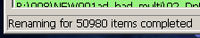

Métamorphose is a batch renamer, a program to rename large sets of files and folders quickly and easily.
With its extensive feature set, flexibility and powerful interface, Métamorphose is a profesional's tool.
A must-have for those that need to rename many files and/or folders on a regular basis.
In addition to general usage renaming, it is very useful for photo and music collections, webmasters,
programmers, legal and clerical, etc.
Main Features :
- Preview every item to be renamed before comiting changes.
- Add any number of operations in any order (v.2 only)
- Recursive renamer : load all files in directory and in subdirectories.
- Undo changes in case of mistakes.
- Regular expression support throughout.
- Rename music and image files by their metadata information.
- Full unicode support means any character from any language can be used.
- Use of all allowed characters under Windows and OSX, all except ':' in Linux.
Compatible operating systems :


Other Features :
- Preview images (Métamorphose v.2 only)
- Save all program settings to file for later use.
- Renaming operations, which can apply to name and/or extension :
- Prefix
- Suffix
- Replacement, modification, or move by: Character, position, or regular expression.
- Insertion by : Position or every (number) characters.
- Length modifications (padding, truncating, or both).
- Renaming styles : combination of: user text, numbering, audio tags, date, time.
- Modifications : UPPERCASE, lowercase, Capitalize first, Title Style, sWAP cASE, 'DoRkIfY'
- Move by position, text, or regular expression.
- Sequential numbering (enumerating) options :
- Use integers, alphabetical, or roman numerals
- Use padding
- With integers, use any character to any fixed width, or auto pad.
- With alphabetical, auto pad in this format : aaa, aab, aac, ... aba, ... ygr, et cetera
- Control step size, starting number, reset count.
- Set date and time manually or get from system.
- Use supplied defaults or specify your own date and time formats.
- Python and open source (GNU-GPL) means it's quickly, easily, and legally customizeable to fit your needs.
Read the License for more details.
- Easily translatable with GNU GETTEXT utilities.
- Métamorphose was written in Python, using
wxPython for the graphical interface.
Video Tutorials :
Reviews :

System Requirements :
Métamorphose v.1
- Minimum screen resolution: 800 x 600 (1024 x 768 recommended)
- Interpreted (source) version: Python 2.5, wxPython 2.8
- Binary (executable) version: NT family of MS Windows (2000, XP, Vista, 7)
Métamorphose v.2
- Minimum screen resolution: 1024 x 768
- Interpreted (source) version: v.2 - Python 2.6, wxPython 2.8
- Binary (executable) version: NT family of MS Windows (2000, XP, Vista, 7)

This web site and the Métamorphose logo are copyright © 2005-2010 Ianaré Sévi.
Don't let that stop you from using the web site code, though I doubt you would find anything terribly useful.